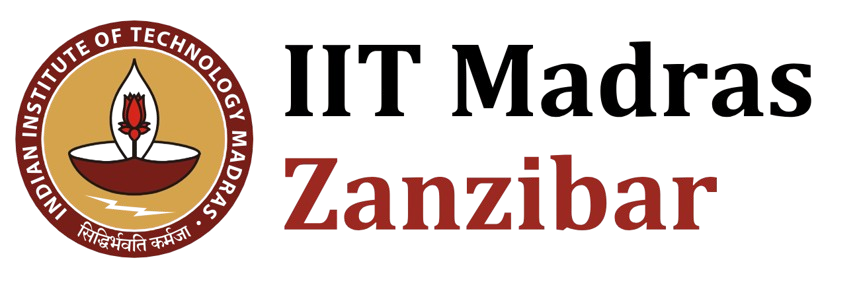
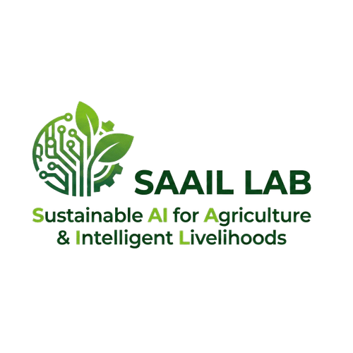

One-line bio
Dr. Innocent Nyalala is an Assistant Professor of Data Science and AI at IIT Madras Zanzibar and founder of the SAAIL Lab.
Short bio (for programs and introductions)
Dr. Innocent Nyalala is an Assistant Professor of Data Science and AI at IIT Madras Zanzibar and an Associate Research Fellow at the Wadhwani School of Data Science & AI, IIT Madras Chennai. He is the founder and head of the SAAIL Lab (Sustainable AI for Agriculture & Intelligent Livelihoods), where his research focuses on applying AI to real-world challenges in agriculture and healthcare across East Africa. His work has been published and presented at venues including CVPR, ICLR, and Deep Learning Indaba.
Quick facts
Title: Assistant Professor of Data Science and AI
Institution: IIT Madras Zanzibar
Lab: SAAIL Lab (founded June 2025)
Citations: 1,047+ · H-index 15
Publications: 25+
Research areas: AI for Agriculture, Healthcare AI, Responsible AI
Institutional logos


For press use with attribution. Do not modify or recolor.
Need something else for a feature or event? Get in touch directly.
Contact for Press Inquiries